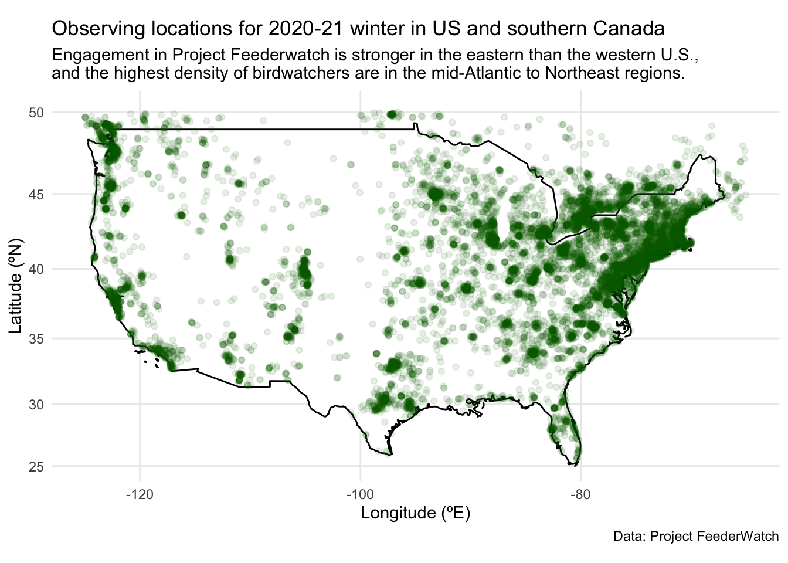
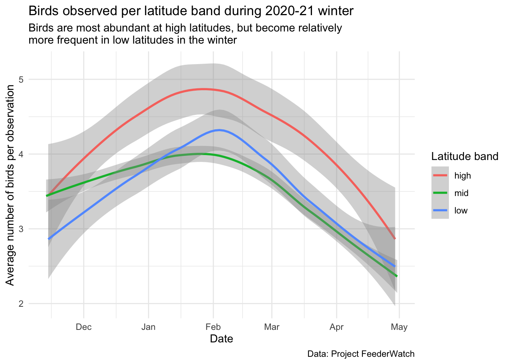
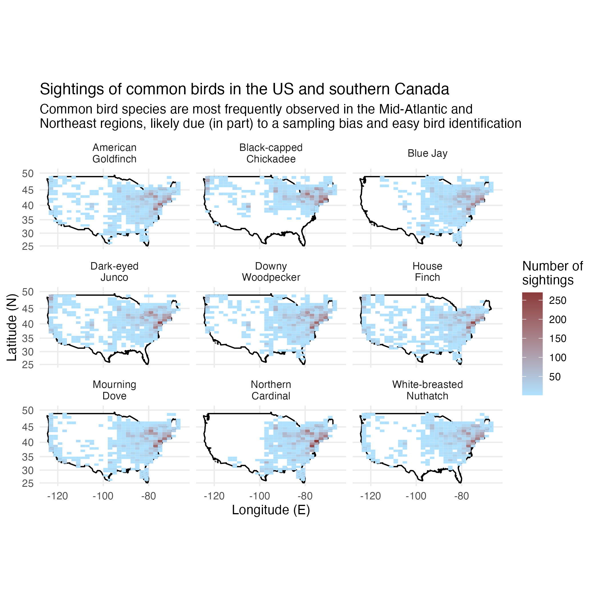

Example analysis

Photo credit: Bob Vuxinic, submitted to Project FeederWatch
Project aims
In this example analysis, I investigate patterns in abundance and distribution of birds in the 2020-21 winter in the United States and southern Canada. Specifically, I aim to answer the following questions:
- when and where are birds observed
- which species are most common, and where are they found
- which species tend to occur in large flocks, and where are they found
This analysis is intended for the general public, as well as the citizen scientists (and the graders for Biostat 777).
Data from Project FeederWatch
These data were discovered via TidyTuesday for January 1, 2023, but originally come from Project FeederWatch. Project FeederWatch is a citizen science project that aims to engage individuals in North America to count birds (for as long or as little as they like) to track winter trends in bird distribution and abundance. This project has been running for more than 30 years at this point!1 The data dictionary is available here.
Where are birds observed?
In order to understand trends in bird distribution and abundance, we first need to know where our observations are coming from. Here is a figure showing the locations of observations. The points are transparent, so denser bird-watching areas are shaded darker green.
Birdwatching locations
Participants can birdwatch anywhere – it doesn’t have to be at their backyard feeder! But remember the distribution of observing locations in this figure since it will be relevant for understanding the distribution of common and flocking birds examined below.
Since most bird-watching happens in the mid-latitudes (defined here as 35-45ºN), we must standardize the number of birds by the number of observations. The following figure indicates that birds are more abundant at higher latitudes even though there are fewer total observations. However, birds become more common at lower latitudes (<35ºN) from January to March. This may be explained by migration to southern regions during the coldest months of the year. The fact that more birds are reported within every latitudinal band during the coldest months may indicate that more birds visit feeders to obtain food during the harshest conditions of the year.

LOESS (locally weighted running line smoother) was used on these curves. This is the default option for geom_smooth.
Let’s now explore how often different species are observed. A total of 361 unique species were reported, but most of these species were only observed once! However, the most common species were observed thousands of times! This is probably explained in part because birds are incredibly diverse,2 so some of these species may actually be rare, while others have may have limited distributions or be harder to identify.

Rare birds are becoming rarer
In 2019, the National Audubon Society estimated that two-thirds of North American birds were at risk of extinction due to climate change.3
Which birds are most common?
You’ll probably recognize the names of some of the most common birds! These birds were identified as “common” in the data set because they had the most observations (though not necessarily the highest total count of individuals).
| Common name | Scientific name | Number of observations |
|---|---|---|
| Dark-Eyed Junco | Junco hyemalis | 5465 |
| Downy Woodpecker | Picoides pubescens | 5449 |
| Northern Cardinal | Cardinalis cardinalis | 5438 |
| House Finch | Haemorhous mexicanus | 4955 |
| Mourning Dove | Zenaida macroura | 4938 |
| Black-Capped Chickadee | Poecile atricapillus | 4696 |
| Blue Jay | Cyanocitta cristata | 4578 |
| American Goldfinch | Spinus tristis | 4446 |
| White-Breasted Nuthatch | Sitta carolinensis | 4393 |
Most of the common birds were observed throughout the U.S. (or at least where people were reportedly birdwatching, see Figure 1). However, some birds had more limited distributions. For example, the blue jay and the northern cardinal were found predominantly in the eastern half of the U.S., and the black-capped chickadee was only observed in the more northern latitudes.

Which birds are usually found in a flock?
Have you heard the saying that “birds of a feather flock together”? The birds in the figure below had the highest average abundance per observation. This indicates to me that these birds tend to appear most often in large flocks.

Summary
In this example analysis, we explored patterns in the distribution and abundance of birds observed through the citizen science initiative Project FeederWatch conducted in winter 2020-21. We found that most of the observations for this program were made in the mid-Atlantic and northeast regions of the U.S. This pattern of observation corresponded strongly with the distribution of several of the most common birds, including the American goldfinch, dark-eyed junco, downy woodpecker, and house finch. However, flocking birds tended to have smaller ranges but a larger number of birds reported per observation. In general, birds were most abundant in the coldest months (January-March) and at the highest latitudes (>45ºN).
Functions used
dplyr: mutate, group_by, summarize, arrange, filter
ggplot2: geom_smooth, geom_histogram, geom_polygon, geom_bin_2d, geom_point, facet_wrap
References
1.
Bonter, D. N. & Grieg, E. I. Over 30 years of standardized bird counts at supplementary feeding stations in north america: A citizen science data report for project FeederWatch. Frontiers in Ecology and Evolution 31, (2021).
2.
Wong, K. How birds evolved their incredible diversity. Scientific American (2020).
3.
Wilsey, C. et al. Survival by degrees: 389 bird species on the brink. (2019).